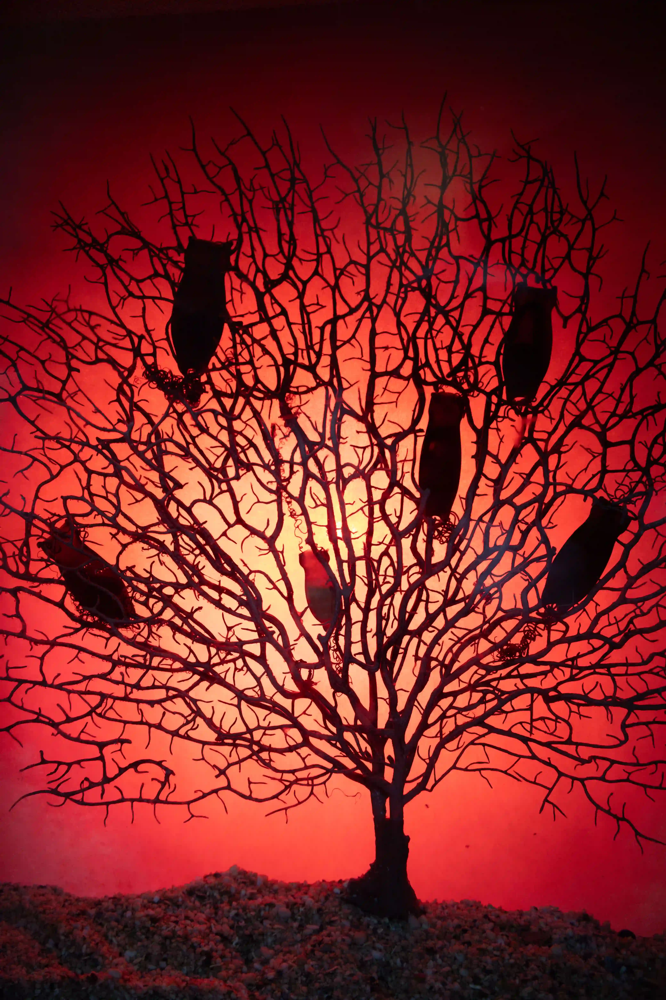
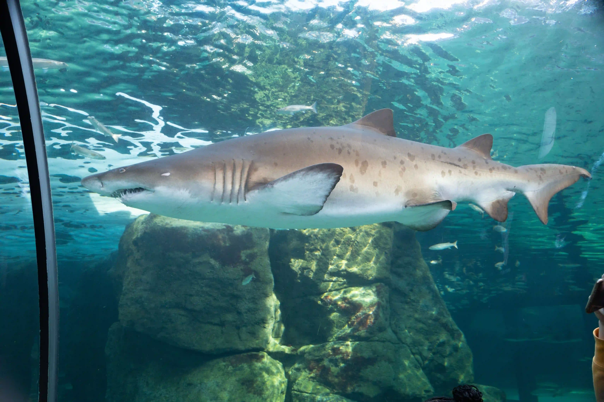

Photographie · Afrique du Sud
Des images qui
gardent la trace.
Paysages, rencontres et instants sauvages — une collection personnelle pensée pour être explorée en grand.
Explorer la collectionLe studio
Un carnet visuel,
sans frontières.
JSPictureStudio rassemble des fragments de voyage et de vie sauvage. Chaque image est disponible en aperçu haute définition et en téléchargement.
390 photographies · 10 collections · Afrique du Sud
Carnets de voyage
Explorer par histoire
Deux itinéraires, dix étapes et autant de façons de voir le territoire.
Sélection du studio
Toutes les images
Chargement de la collection…

Rester curieux
Le voyage continue.
De nouvelles images rejoindront bientôt la collection.
Suivre le studio sur GitHub →